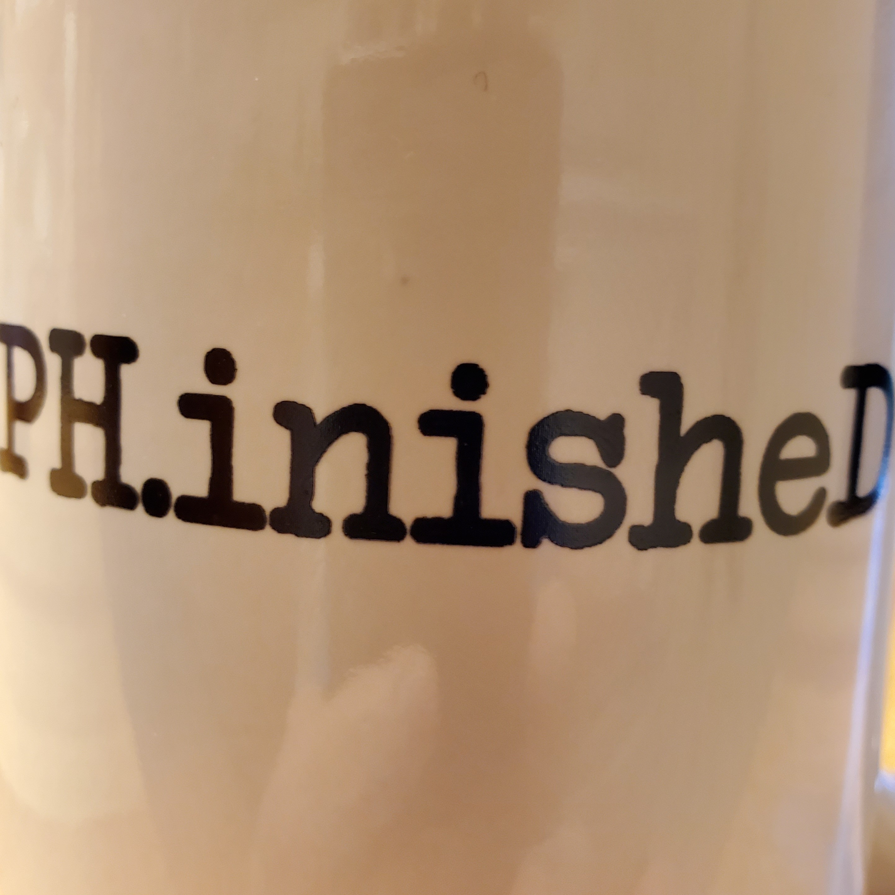

ELECTRONIC MUSIC
I started writing music on the piano when I was 12, and soon graduated to composing on sythesizers and recording albums on both analogue and digital media. I was in a series of pop music bands in the late 1980s and early 1990s. We released several albums and singles, incluiding one that was regularly played on a Vancouver alternative music radio station. We also perfomed gigs at local venues such as the Town Pump and Graceland.
While I took a break from music for many years, I eventually started working on solo projects again. My most recent album, "Phinished", was released on SoundCloud in March 2023. The album was composed and recorded on PC using Ableton Live 9, several 3rd party synth plug-ins, and an M-Audio MIDI keyboard. I have since upgraded to Ableton 11 and have started on another album.
Visit me on SoundCloud
LATEST RELEASE
"Phinished"
